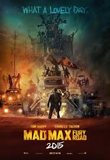

MAD MAX:FURY ROAD
2015 IMDB-8.2
In an apocalyptic world, a tyrant rules over a stark desert, controlling every drop of water. Two rebels, one escaping grief and the other reaching out to her childhood, are the last hope for a few.
1. The scarcity mindset creates conflict:
In the world of Mad Max, resources are scarce. Whether it’s vehicles or food or drink, you had a hard time getting what you needed. We see a scene where Immortan Joe uses his power to restrict the flow of water to his people. He releases a little and the people clamor to fill their buckets. When the water stops flowing, the people begin to fight each other. It was messy.Whatever you withhold and create scarcity for, that scarcity creates conflict. Be someone who tries to have enough resources to go around.
2. Know when it’s time to run
As Imperator Furiosa is trying to get her girls free, they face a situation that requires them to run. She tells the women to kick it into gear and RUN! We may feel it’s more noble to stand our ground and fight every battle.Not out of cowardice but out of wisdom. Be willing to run when it’s the right time.
3. People are looking for hope
The wives of Impertan Joe left because Imperator Furiosa gave them hope of a better land. One that was green and full of life. They left knowing they couldn’t go back to the citadel. They left because of hope.Truly said that hope sustain life.
4. Women Are People
This is a lesson that all too many films have profound difficulty in grasping. Fury Road has been touted as a “feminist” action movie, but what that really means is that the female characters are treated as whole human beings and not plot devices. The film passes the Bechdel Test by the first introduction of the Wives; the trajectory of the plot is more concerned with Furiosa’s redemption than with Max’s; the antidote to Joe’s patriarchal warrior construct are women working together to bring life back to the earth. Capable women are at the center of the narrative – and they are women of all ages and all types. While the film adheres to certain broad tropes, it takes those tropes and turns each character into actual human beings.
5. Men and women cannot live in exclusive societies
Men and women need to come together to bring about constructive change. Anyone "going their own way" seems to be a petulant solution at best. Even though the Many Mothers have stayed away from men, they need Mad Max to point them to the right path. Even though Immortan Joe imprisons his wives and other women as breeders and producers of milk, it is the wives who are his eventual undoing.
5. We may not like our destination when we arrive
When Mad Max and his gang find a beacon Imperator Furiosa recognizes, they believe they’re close to their destination. When they begin to talk to the women who are in the area, they realize their destination wasn’t what they were expecting.After the vision was actualized, you discovered the destination wasn’t what you had expected.Sometimes it’s not perfect. This means we have to redirect and cast a new vision with hope that it’s going to be a better destination.
7. Excess Has To Have A Point
Nothing in the movie theaters right now is as excessive as Mad Max: Fury Road. Flaming-throwing guitars, big ass explosions, an army that brings its own soundtrack, this is a thumping, roaring, crashing, banging film, with sweeping character types, a rich apocalyptic landscape and almost no respite from the thundering violence that occupies every turn. But for all its excess, Fury Road is a cohesive and well-put-together film, relying not just upon big explosions but adequate character development and the nuance behind those explosions.Fury Road takes on issues of capitalism, industrialization, religious mania, feminism, and the effect of patriarchy on the whole of society. The patriarchal construct here is damaging to both the women who are treated as property and the young men, the warriors, who are duped into sacrificing their lives for Joe by being promised a place in Valhalla.
Most Popular this week

2015 IMDB-7.7
A young programmer is selected to participate in a ground-breaking experiment in synthetic intelligence by evaluating the human qualities of a breath-taking humanoid A.I..

2015 IMDB-8.1
During a manned mission to Mars, Astronaut Mark Watney is presumed dead after a fierce storm and left behind by his crew. He must draw courage to find a way that he is alive..

2014 IMDB-7.3
Navy S.E.A.L. sniper Chris Kyle's pinpoint accuracy saves countless lives on the battlefield and turns him into a legend. Back home to his wife and kids after four tours of duty, however, Chris finds that it is the war he can't leave behind.